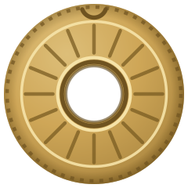

Krystine St-Laurent · votre espace

Le niska est la monnaie de votre espace sur krystinestlaurent.ca. Il porte le plus vieux nom d’argent de l’Inde : dans le Rig-Véda, le niska est l’ornement d’or porté au cou, et il servait déjà à compter la richesse avant de devenir une pièce d’or. Ici, il achète ce qui rend votre espace à vous.
La petite boutique vit dans l’onglet Téléchargements de votre espace. Trois objets y personnalisent votre profil, et les émissions complètes de Santé la vie s’y achètent à l’unité pour rejoindre vos téléchargements pour de bon.
La même scène que votre bannière d’accueil, avec Nature & Ayurveda posé sur la table.
La pièce composée pour l’Expérience Origine. Vous la téléchargez et vous pouvez en faire la musique de tout le site.
Votre espace dans des bruns de café au lait. Le premier d’une série de skins à venir.
Toutes les vidéos de sa chaîne YouTube, les directs et les capsules, rangées dans vos vidéos avec leur lecteur.
Les intégrales telles que diffusées sur MAtv, dix-neuf émissions sur trois saisons, à regarder quand vous voulez.
Quand la bourse est courte, cent niskas s’achètent d’un coup par carte depuis votre espace.
Les niskas ne s’échangent pas contre de l’argent et ne s’envoient pas à une autre personne. Ils restent dans votre bourse aussi longtemps que votre compte existe.
À l’ouverture de votre compte
Dix niskas vous attendent dès que votre compte existe. Le reste se gagne en revenant, en participant et en invitant vos amies.
Toutes les façons d’en gagner
Chaque jour où vous ouvrez votre espace, une récompense tombe dans votre bourse. Elle grossit d’un jour à l’autre tant que vous revenez sans sauter de journée, et le septième jour vaut cinq niskas. Passé ce jour, la roue repart.
Votre solde se lit en haut de votre espace et dans l’onglet Profil, avec l’historique de tout ce qui est entré et sorti de la bourse. Une question sur un niska qui manque ? Le bouton Problème technique, en bas de votre espace, nous l’envoie directement.